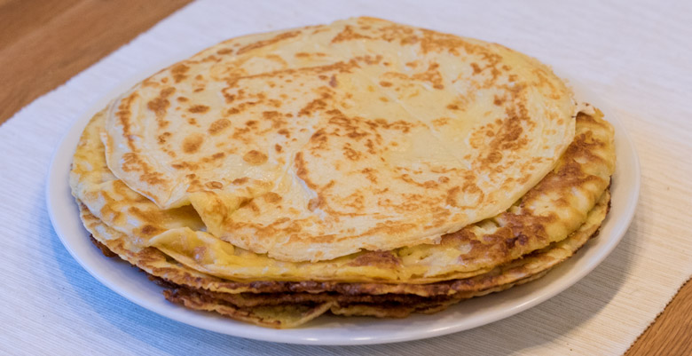

Pannkakor

Vanliga enkla pannkakor som man steker, servera gärna med sylt och grädde!
Ingredienser
2 dl Mjölk
1 Ägg
1 dl Mjöl
Instruktioner
Blanda Mjöl, Ägg och Mjölk jämnt
Stek ca 1 dl i taget i en klick smör.
Tips
En liten nypa salt kan göra pannkakan godare.
Låt smeten svälla ett tag innan den steks för att göra stekningen lättare.
Sika mjölet för att slippa klumpar.
Vänd pannkakan när ovansidan inte längre är flytande.
Receptlistan